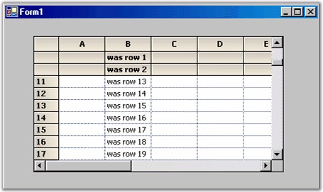

A frozen row is one that cannot be scrolled. For example, the default column header (row 0) is a frozen row. Frozen rows will always be displayed at the top of the grid. You can set the number of frozen rows using the GridControl.Rows.FrozenCount property. In our previous code sample, we used the Rows.HeaderCount property to set up two additional column header rows. To cause the new headers to be fixed and not to scroll, you need to set the Rows.FrozenCount to two. Note that you can freeze non-header type rows as well but, in the following code samples, we are freezing headers only.
|
[C#]
// Have 3 non-scrollable rows at the top. this.gridControl1.Rows.FrozenCount = 2;
// Total of three column header rows. this.gridControl1.Rows.HeaderCount = 2; |
|
[VB.NET]
' Have 3 non-scrollable rows at the top. Me.GridControl1.Rows.FrozenCount = 2
' Total of three column header rows. Me.GridControl1.Rows.HeaderCount = 2 |

Figure 173: Grid with Three Frozen Column Header Rows
As we have said, frozen rows will always appear at the top of the grid and frozen columns will always appear to the left of the grid. It is possible to freeze an interior range of row or columns, using the GridControl.Rows.FreezeRange or GridControl.Cols.FreezeRange method. But, the FreezeRange method will move the requested rows / columns to the top or left and then it will set the FrozenCount to actually freeze the rows or columns.
|
[C#]
// Moves rows 3 and 4 to the top of the grid and freezes them. this.gridControl1.Rows.FreezeRange(3,4); |
|
[VB.NET]
' Moves rows 3 and 4 to the top of the grid and freezes them. Me.GridControl1.Rows.FreezeRange(3,4) |